Introduction - LPG FUEL SYSTEM.
- Path
- Descriptions > 10 ENGINE UNIT > 1057 LPG FUEL SYSTEM. > Introduction - LPG FUEL SYSTEM.
- Kind
- system description
- Applies to
- engines: 1.6 16v; all production periods; only with equipment: GPOWER
- Interactive page
- https://sloeber94.github.io/elrnDB-fMltpl/en/#/2892434
Applies to: engines: 1.6 16v; all production periods; only with equipment: GPOWER
CONSTRUCTION FEATURES
The dual fuel system consists of a Magneti Marelli IAW 4EF.G1 basic system for petrol operation and an integral system (Metatron METAFUEL 5D0) for LPG operation. Both systems are connected via a high-speed CAN line.
The Marelli IAW 4EF.G1 system belongs to the integrated system category with:
- inductive discharge digital electronic ignition
- static distribution
- sequential, phased electronic injection (1-3-4-2).
The Vialle/ Metatron METAFUEL 5D0.2B0 system belongs to the integrated system category with:
- sequential, phased electronic injection (1-3-4-2).
All parts of the LPG system are transparent to the basic system and it does not alter the operation of the basic system in any service conditions.
Both control units share certain system elements. The sharing is transparent to the base system.
The list of components shared between the two systems via parallel connections is as follows:
- pressure sensor in the inlet manifold.
- throttle position sensor;
- engine rpm sensor;
- engine timing sensor
- Lambda sensor upstream of converter
The list of additional components for the LPG system is as follows:
- METAFUEL 5D0 LPG injection electronic unit
- LPG pressure sensor in the injector rail;
- relay for LPG cut-out solenoid on tank
- LPG cut-out solenoid on tank
- LPG cut-out relay on pressure regulator
- LPG/petrol selector;
- LPG injector relay;
- LPG injectors
- petrol pump cut-out relay;
- LPG level sensor
- LPG pump
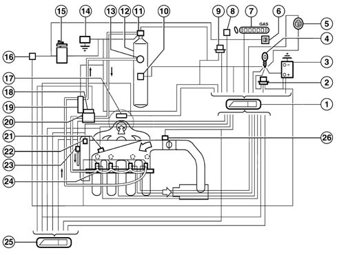
1, LPG engine control unit 2, LPG injector supply relay 3, Battery 4, Ignition switch 5, Petrol or LPG operating mode selector 6, Petrol operating mode (Power Mode) green warning light 7, LPG level gauge 8, Tester connection 9, Relay controlling LPG pump and LPG solenoids (on tank and pressure regulator) 10, LPG level sensor 11, Intake solenoid on tank 12, LPG tank 13, One-way LPG return valve on tank 14, Inertia switch 15, Fuel pump 16, Fuel pump cut-out relay 17, Lambda sensor upstream of catalytic converter 18, Stop solenoid on the pressure regulator 19, LPG pressure sensor 20, LPG pressure regulator unit 21, Intake air temperature and pressure sensor 22, Engine timing sensor 23, Engine rpm and TDC sensor 24, LPG injectors 25, Petrol engine control unit 26, Throttle valve position sensor
OPERATION
The system can operate in two modes: petrol and LPG Both control units are permanently activated during engine operation.
Switching between them can take place as follows
- manually via a selector on the dashboard
- automatically, determined by the METAFUEL 5D0 unit when the LPG has run out or under specific recovery conditions
The operating mode is indicated by means of a PETROL operation warning light (POWER MODE) on the control panel. Regardless of the selector key position, this indicator indicates LPG operation if off and petrol operation if on.
Both electronic units are joined by a CAN communication line that is used to exchange data, commands and other information for correct management of both control units.
Diagram of input/output information from the control unit
The petrol engine control unit and the LPG engine control unit communicate via CAN line
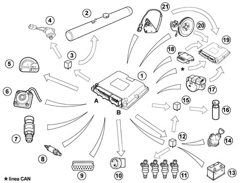
1, LPG engine control unit 2, LPG tank submerged pump 3, LPG pump control relay and LPG solenoid (on tank and pressure regulator) 4, LPG uptake and arrest solenoids 7, LPG level gauge on the instrument panel 6, LPG level sensor 7, LPG pressure sensor on the pressure regulator 8, Lambda sensor upstream of the converter 9, Diagnostic equipment connection 10, Petrol or LPG operating mode selector 11, LPG injectors 12, LPG injector supply relay 13, Battery 14, Ignition switch 15, Fuel pump cut-off relay 16, Electric petrol pump 17, Throttle valve position sensor 18, Air pressure sensor 19, Petrol engine control unit 20, Rpm and TDC sensor 21, Engine timing sensor
OPERATING STRATEGIES
Petrol operation
During this operating mode, the system works in the same way as the basic system
The basic Magneti Marelli 4EF.G1 electronic unit does not change its behaviour and the system management strategies are as for the basic version.
The specific parts of the LPG system do not interfere with the basic system in any way.
Lpg operation
The engine works on methane from start-up (naturally with the selector set to LPG mode before starting). The petrol pump is consequently deactivated during LPG operation, except during start-up when it is active for a few seconds during LPG injection activation in order to diagnose the deactivation relay.
The METAFUEL 5D0 manages phased sequential LPG injection, activation of the LPG cut-off solenoids and fuel pump deactivation. All other engine control functions, including the ignition advance, are managed by the base unit. The injection is activated directly by controlling special LPG system injectors. The ignition advance is adjusted by sending the basic electronic unit the advance change to be added to that applied during petrol operation. This communication takes place via the CAN line between the two control units. Other basic electronic unit functions are managed normally and all input signals remain unaltered. All commands are implemented as normal (stepper, ignition etc.).
The METAFUEL electronic unit processes information from the basic system sensor, information received via the CAN line from the 4EF.G1 control unit and information from additional LPG operation sensors to recognise system operating conditions and generate LPG injector commands
The LPG cut-off solenoids are activated and the petrol pump is deactivated upon switching from Petrol to LPG. When the system is switched from LPG -Petrol, the METAFUEL 5D0 works in the opposite way (i.e. the LPG cut-off solenoid is deactivated and the fuel pump is reactivated). In this case, the pump is turned on immediately to pressurise the system.
Management strategies use typical curves and parameters stored in the METAFUEL 5D0 electronic unit. Calibration values are defined on the basis of performance, fuel consumption, emission and handling objectives.
Management strategies specific to the LPG system are essentially as follows:
- Engine signal framework management
- Ignition management
- Injection management
- Idle speed management
- System self-adaptation
- Start-up
- Acceleration and deceleration
- Operation during cut-off
- Operation under full load conditions;
- Protection against excess rpm
- Barometric correction
- Fuel vapour recovery
- Control of combustion gas - Preconverter lambda sensor
- Air conditioning compressor connection
- LPG level indication
- Fuel pump control
- LPG pump control
- LPG cut-off solenoids and LPG pump control
- LPG injector control
- Switching betweenn both operating modes (Petrol and LPG)
- Connection to electronic key (Fiat CODE)
- System self-diagnosis
Engine signal framework management
The METAFUEL electronic control unit recognises the engine phase and determines the injection timing angle. Recognition takes place by processing signals from the timing sensor and the rpm and TDC sensor. These two signals make up the engine signal framework
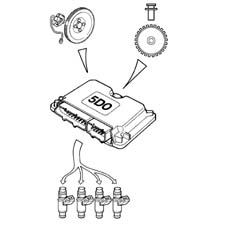
Ignition management
The coil charge time and the ignition time in relation to TDC are always determined and managed by the basic electronic control unit, which receives the advance change to be applied from the METAFUEL 5D0 unit via CAN.
The METAFUEL 5D0 unit contains an advance change value map based on engine speed and load. The advance correction calculation chain involves selection of a baseline value and its correction according to coolant temperature.
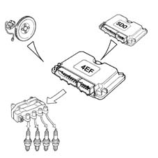
The advance correction calculation chain involves selection of a baseline value and its correction according to coolant temperature.
The aim of fuel management is to deliver the amount of fuel required to meet performance and engine fuel consumption and emissions targets. The METAFUEL 5D0 unit does not manage the start-up stage.
Injection is phased, sequential.
The METAFUEL 5D0 control unit uses an indirect engine load measurement system (speed-density) This method is used to calculate the amount of fuel to be injected into each cylinder for each engine cycle.
LPG is delivered by modulating injector opening time. Injector input pressure is governed by the pressure reduction unit.
The METAFUEL unit injection strategies allow the engine to be supplied with the correct amount of methane under all service conditions (acceleration, deceleration, altitude, cold).
Idle speed management
Idle speed management (stepper management) is managed by the basic electronic unit. The METAFUEL 5D0 unit alters idle speed by means of an offset sent via the CAN network.
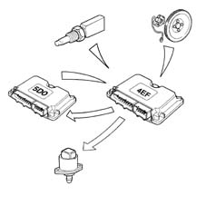
Self-adaptation of the system
Self-adaptive strategies allow the injection control to be adjusted to system shifts due to output dispersion and engine ageing.
Start-up
The engine is always started using petrol.
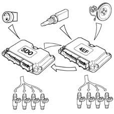
Acceleration and deceleration
These operational conditions are indicated by means of throttle and manifold pressure signals.
During these two stages, the METAFUEL 5D0 unit adjusts fuel injection as quickly as possible to maximise acceleration torque and optimise handling during deceleration.
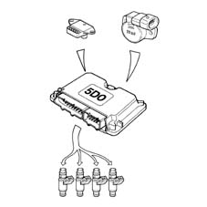
Operating with cut-off
The fuel cut-off strategy is implemented upon recognition of throttle closed with engine speed high. This strategy is enabled only above a given coolant temperature value. The METAFUEL 5D0 electronic unit manages input and output from this stage to reduce emissions during this engine operating stage.
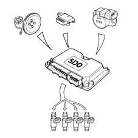
Operation in full load conditions
Full-load service conditions are managed by the METAFUEL 5D0 electronic unit by means air-LPG mixture enrichment strategies similar to those applied by petrol engine control systems.
Protection against excess rpm
The METAFUEL 5D0 electronic unit protects the engine against excess rpm. This protection involves cancelling injection times when a given speed value is exceeded. Normal injection is reset when speed returns to below critical levels.
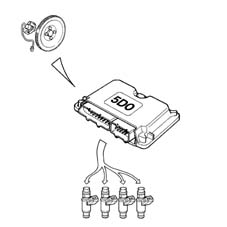
Barometric correction
The METAFUEL 5D0 control unit implements an altitude recognition and barometric correction strategy on the mixture concentration.
Fuel vapour recovery
During LPG operation, the fuel canister purge facility is carried out by the METAFUEL 5D0 unit by sending the command to the base unit via the CAN line.
The LPG fuel system is sealed. LPG pressure in the system never exceeds maximum load pressure under any service conditions. LPG vapour recovery systems are not therefore required.
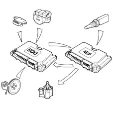
Control of combustion gas - lambda sensor
The METAFUEL electronic unit uses a signal from the lambda sensor upstream of the catalytic converter to control metering of the air-LPG mixture to obtain maximum conversion efficiency.
The METAFUEL 5D0 electronic control unit manages heating of the two lambda sensors located upstream and downstream of the catalytic converter via the CAN line.
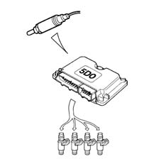
Air conditioning compressor connection
The METAFUEL 5D0 electronic control unit is not connected to the air conditioning system.
Compressor activation and deactivation under certain operating conditions, to improve engine performance, are regulated by the basic electronic control unit using the same procedures and operating conditions as the basic system.
Lpg level indication
The METAFUEL 5D0 receives a signal indicating the amount of liquid LPG in the tank from the LPG level device. this information is then sent by the METAFUEL 5D0 control unit to the indicator on the control panel.
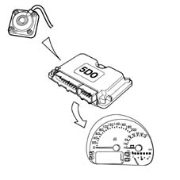
Petrol pump control
The petrol pump is closed to earth by an inertia switch and governed by the METAFUEL 5D0 electronic unit via a special relay.
The pump cuts out:
- if switching takes place between petrol/LPG
- if the inertia switch has operated.
When the system is switched from LPG to Petrol, the METALFUEL 5D0 electronic unit immediately reactivates the petrol pump to pressurise the system.
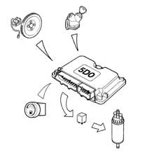
Lpg pump control
The LPG pump is governed by the METAFUEL 5D0 electronic unit by means of a duty-cycle command that permits 5 speeds with different outputs.
Speed 1 has been found to allow correct engine idle operation under all engine coolant conditions. For higher rpms, speed 2 covers all engine service points with limited noise output.
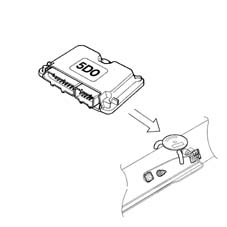
Lpg and lpg pump cut-off solenoid control
There are 2 LPG cut-off solenoids:
- 1 solenoid on the cylinder;
- 1 solenoid on the pressure regulator
The 2 solenoids are connected in parallel, closed to earth via the inertia switch and governed by the METAFUEL 5D0 ECU via a special relay. The solenoids are closed and the pump is turned off:
- if engine rpm drops below a certain level;
- after about 5 seconds with the ignition switch in the ON position without the engine being started up (timed enablement)
- if an LPG/Petrol switching command is issued;
- if the inertia switch has operated.
After the LPG-Petrol switch, the METAFUEL 5D0 electronic control unit deactivates the LPG cut-off solenoids.
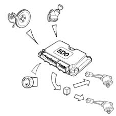
Lpg injector control
The operation of the LPG injectors is the sequential, phased type.
The timing of the injector operation varies according to the engine speed and pressure of the inlet air in order to improve the filling of the cylinders with advantages in terms of consumption, driveability and pollution.
The injectors are electrically supplied by means of a specific relay: the lpg engine management control unit closes the contacts for the section relating to the LPG injectors according to specific situations.
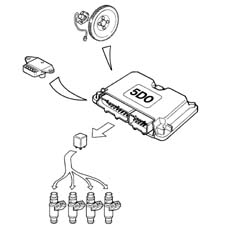
Switching between the two operating modes (petrol and lpg)
The function is regulated by the METAFUEL 5D0 electronic unit and a selector key on the dashboard beneath the speedometer The selection key contains an led that comes on to indicate positioning on PETROL mode.
When selector key (1) is released, the user has chosen to work in Gas mode (key led off). When it pressed, Petrol mode has been chosen (key led on). A PETROL mode operating indicator (2) consisting of a green warning light (POWER MODE) on the control panel and an LPG level gauge consisting of a set of green leds + 1 yellow for reserve (3) are also present. The LPG level gauge is always active, regardless of the operating mode.
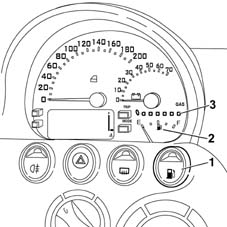
The PETROL mode control panel indicator lighting strategy indicates the following regardless of selector key position:
a) LPG operation = lighting deactivated
b) petrol operation = lighting activated
The user can switch between the two operating modes at any time, provided the engine speed is lower than a certain rpm threshold.
The LPG/Petrol switching strategy differs from the Methane/Petrol strategy because, due to the nature of the fuel, the fuel level sensor must be able to carry out an initial analysis of the amount of LPG in the tank. This sensor can be used to manage the fuel level reading on the instrument panel but its main function is to identify a 'tank not empty' condition.
LPG pressure changes in the rail are considered to identify the 'tank empty' condition and thus an automatic return to Petrol mode. The pump in the tank sets up a pressure difference of about 4 bars. If the pressure difference generated by the pump disappears due to tank emptying, pressure in the rail quickly drops to give an almost immediately indication that no fuel is present.
Petrol --> LPG switching
The following options are possible:
1 Manual by the user with the engine off
Selector key position: released
PETROL mode indicator light: activated
When the engine starts up, the PETROL mode indicator is on (activated) to indicate that the engine is running on petrol. After start-up (when cranking has just finished), the system switches to LPG; The PETROL warning light goes off after a few seconds' delay to allow diagnosis of the fuel pump deactivation relay.
Switching to LPG is inhibited if the LPG level is lower than a threshold corresponding to 'tank not empty', if coolant temperature is too low or if a system fault is diagnosed (where possible).
2 Manual by user with engine running
This operation is only possible with engine speed below a given rpm threshold.
Initial selector switch position: pressed
Initial PETROL mode indicator lighting: activated.
The user presses the selector key to start the Petrol --> LPG switching function, which takes place only when the following conditions are satisfied:
- a) LPG pressure in cylinder within a set range;
- engine coolant temperature higher than a set threshold
- LPG level higher than a threshold corresponding to 'tank not empty';
- no faults identified by the METAFUEL 5D0 electronic unit diagnostic function.
Switching cannot take place until all the conditions are met. After switching, the PETROL mode indicator is turned off on the control panel. If this is the first switch from LPG since Key-On, the PETROL mode warning light goes off with a few seconds' delay to allow diagnosis of the fuel pump deactivation relay.
Switching from LPG to Petrol
The following options are possible:
1 Automatic (with engine running)
Initial selector key position: released
Initial PETROL mode indicator lighting: deactivated
Automatic LPG --> Petrol switching takes place when decided by METAFUEL 5D0 unit control strategies and only if the following conditions are met:
- LPG pressure in tank outside a set range of values;
- no pressure difference set up by pump
- identification of system fault (where applicable)
When one of the conditions is satisfied, switching immediately takes place from LPG to Petrol and the PETROL mode indicator light comes on on the control panel. Selector key position remains unchanged.
After switching, the LPG operating mode is inhibited completely until the condition that gave rise to the automatic switching has been eliminated (refuelling or fault eliminated).
2 Manual by user with engine running
This operation is possible onlly if engine speed is lower than a set rpm threshold.
Initial selector key position: released
Initial PETROL model indicator lighting: deactivated
The user presses the selector key to start the LPG --> Petrol switching function, which takes place immediately together with activation of the PETROL mode indicator on the control panel.
Connection wtih electronic key
The METAFUEL 5D0 control unit is not connected to the electronic key control unit (Fiat CODE).
The electronic key system keeps working only with the basic system; Electronic key operation is guaranteed under all conditions because the system needs enablement from the PETROL control unit in order to switch to LPG and this enablement is given if the Fiat CODE check is OK.
Start-up using a key not stored in the Fiat CODE control unit is not allowed in any operating mode (petrol or LPG). The vehicle customisation and key storage procedure remains the same and must be carried out in petrol mode.
System self-testing
The METAFUEL 5D0 electronic unit tests input/output by cyclically checking characteristic signals and internal self-diagnosis. If faults are detected, it stores the codes in the EEPROM (passive self-diagnosis).
Individual actuators can also be activated by the tester to check their efficiency (active self-diagnosis).
The EEPROM memory is totally deleted by the tester.
Under fault conditions, the control unit manages alternative functions to keep the engine running sufficiently to enable the car to be taken back to the garage. In more severe cases, it automatically switches the system to petrol operating mode and turns off the LPG level gauge on the control panel (recovery).
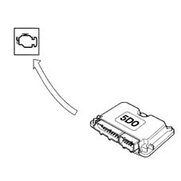
PASSIVE SELF-DIAGNOSIS
The METAFUEL 5D0 ECU tests for faults in inputs/outputs and the electronic unit by cyclically checking the characteristic signals and, in the case of malfunctions, memorizing the relative codes in the EEPROM (passive autodiagnosis). Tests carried out and recovery actions are reported in the case of faults in the following components:
Rail pressure sensor
The METAFUEL 5D0 carries out the following electrical check every 4 s on the signal from the rail pressure sensor:
- short-circuit to earth or open circuit
- short-circuit to vbattery.
The control unit implements the following recovery actions if faults are detected;
- return to petrol operating mode followed by activation of the PETROL mode indicator on the control panel;
- activation of warning light on control panel.
Throttle position sensor
The METAFUEL 5D0 carries out the following electrical check every 4 s on the signal from the throttle position sensor:
- short-circuit to earth;
- short-circuit to vbattery or open circuit.
The control unit implements the following recovery actions if faults are detected;
- return to petrol operating mode followed by activation of the PETROL mode indicator on the control panel;
- activation of warning light on control panel.
Lpg pressure sensor
The METAFUEL 5D0 carries out the following electrical check cyclically on the signal from the LPG sensor:
- short-circuit to earth;
- short-circuit to vbattery or open circuit
The control unit implements the following recovery actions if faults are detected;
- return to petrol operating mode followed by activation of the PETROL mode indicator on the control panel;
- activation of control panel warning light.
The LPG level gauge on the control panel goes off.
Lpg level sensor
The METAFUEL 5D0 carries out the following electrical check every 131 ms on the signal from the LPG level sensor:
- short-circuit to earth;
- short-circuit to vbattery or open circuit.
The control unit implements the following recovery actions if faults are detected;
- return to petrol operating mode followed by activation of the PETROL mode indicator on the control panel;
- activation of control panel warning light.
- The LPG level gauge on the control panel goes off.
Can line
The METAFUEL 5D0 carries out a functional test on the CAN line cyclically to check for check for breaks in the connection.
In this case, the control unit implements the following recovery actions:
- temporary return to petrol operation and thus activation of the PETROL mode indicator on the control panel at each break. Return to LPG operation when the connection is restored, with deactivation of the PETROL mode indicator on the control panel;
- final return to the petrol operating mode, and thus activation of the PETROL mode indicator on the control panel, after 5 breaks on a single trip and activation of the warning light on the control panel.
Preconverter lambda sensor
The METAFUEL 5D0 carries out an operational check cyclically and indicates lambda sensor operation failure in the case of faults or malfunctions.
In this case, the control unit implements the following recovery actions:
- disables closed loop concentration check;
- inhibits self-adaptive strategies.
Rpm sensor
The METAFUEL 5D0 checks the accuracy of pulse counts from the rpm sensor facing the 58-tooth toothed wheel and indicates the following in the case of faults or malfunctions:
- signal not present.
In this case, the control unit implements the following recovery actions:
- resynchronisation;
- car will not start or goes off.
Timing sensor
The METAFUEL 5D0 tests the timing sensor cyclically and indicates the following in the case of faults or malfunctions
- signal not plausible
No recovery actions are included, the system works at the correct phase or incorrect by 360 degrees.
Lpg injectors
The METAFUEL 5D0 carries out a cyclical check on the LPG injectors and indicates the following faults
- open circuit on injector cold side;
- short-circuit of injectors to earth;
- short-circuit of injector cold side to vbattery.
In this case, the control unit implements the following recovery actions:
- return to Petrol operating mode;
- activation of warning light on control panel.
Lpg injector relay
The METAFUEL 5D0 carries out a check on the LPG injector relay coil every 131 ms and indicates the following faults:
- short circuit to earth or circuit open: this diagnosis is possible only in Petrol operating mode;
- short circuit to Vbattery: this diagnosis is possible only in LPG operating mode.
No recovery actions are possible.
Lpg cut-off solenoid and lpg pump relay
The METAFUEL 5D0 carries out a check on the LPG cut-off solenoid and LPG pump relay coil every 131 ms and indicates the following faults:
- short circuit to earth or circuit open: this diagnosis is possible only in Petrol operating mode;
- short circuit to Vbattery: this diagnosis is possible only in LPG operating mode.
No recovery actions are possible.
Fuel pump cut-off relay
The METAFUEL 5D0 carries out a check on the FUEL pump cut-off relay coil every 131 ms and indicates the following faults:
- short circuit to earth or circuit open: this diagnosis is carried out in LPG operating mode once only upon Petrol start-up followed by swtching to LPG;
- short circuit to Vbattery: this diagnosis is possible only in both LPG and Petrol operating modes.
No recovery actions are possible.
METAFUEL 5D0 INJECTION CONTROL UNIT
The engine unit is fitted beneath the passenger side of the facia and is capable of withstanding high temperatures.
It is a digital type with a microprocessor, featuring a high calculation capacity, precision, reliability, versatility and low energy consumption and is maintenance-free.
The task of the electronic control unit is to process the signals coming from the various additional sensors belonging to the LPG system and sensors shared with the petrol system and information from the Magneti Marelli 4EF.G1 control unit through the application of software algorithms and control the operation of the actuators (in particular the LPG injectors and LPG cut-off solenoids) in order to ensure optimum engine operation
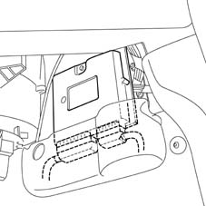
Metafuel 5d0 control unit pin-out
METAFUEL 5D0 CONTROL UNIT PIN-OUT
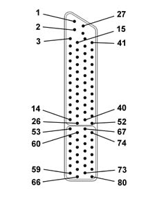
1, Direct supply from battery 2, External sensor power supply 3, Tester input (K - TX line) 4, Not connected 5, Not connected 6, Not connected 7, Not connected 8, Not connected 9, Not connected 10, Not connected 11, Timing sensor (negative) 12, Timing sensor (positive) 13, Not connected 14, Not connected 15, Tester input (L-RX line) 16, Exterior sensor power source 17, Not connected 18, Not connected 19, Not connected 20, Not connected 21, Not connected 22, Digital earth 23, CAN line L 24, Not connected 25, Not connected 26, Not connected 27, Direct return to battery earth 28, Radio earth 29, Not connected 30, LPG pressure sensor signal 31, Not connected 32, Throttle position sensor (negative) 33, Absolute pressure sensor (negative) 34, Ignition-operated power source (+15) 35, Preconverter lambda sensor signal (negative) 36, Not connected 37, Not connected 38, CAN H line 39, Not connected 40, Not connected 41, Not connected 42, LPG level sensor on tank 43, Throttle position sensor signal (positive) 44, Absolute pressure sensor signal 45, Not connected 46, Preconverter lambda sensor signal 47, Petrol or LPG operation selector input 48, Not connected 49, Not connected 50, Not connected 51, VRS rpm sensor (positive) 52 VRS rpm sensor (negative) 53, Not connected 54, LPG pump and LPG cut-off solenoid relay control 55, Battery earth 56, Cylinder no. 4 injector 57, Cylinder no. 2 injector 58, Not connected 59, LPG injector power supply return (INJ+) 60, LPG level analogue signal output 61, Battery earth 62, Battery earth 63, Cylinder no. 3 injector 64, Cylinder no. 1 injector 65, Not connected 66, LPG injector power source return 67, LPG pump speed control 68, LPG injector relay control 69, Not connected 70, Not connected 71, Not connected 72, Not connected 73, Not connected Fuel pump deactivation relay control 75, Not connected 76, Battery earth 77, Not connected 78, Not connected 79, Not connected 80, LPG injector power source return (INJ+)
LPG INJECTORS
Construction features
The injectors are made specially for LPG and are fed from the side.
Due to the low electrical resistance (1.8 Ohm) of the coil, this type of injector prevents vapour lock due to LPG heating because the vapourisation threshold of LPG is intrinsically lower than that of petrol.
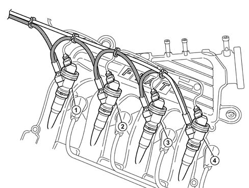
The injectors are fitted directly to the intake ducts and secured by means of a universal injector holder.
The injectors are sealed by means of o-rings and positioned by a threaded collar.
The LPG flow from each injector is correctly directed inside the intake manifold by means of a nozzle on the end of the injector holder.
Because the positioning of this nozzle is essential for correct injection, injector holder maintenance is left to the system manufacturer. The entire manifold must therefore be removed if this is necessary.
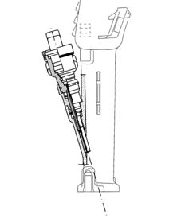
Operation
The control strategy for the injectors is the sequential, phased type, in other words the four injectors are operated individually according to the engine cylinder inlet sequence, whilst the supply for each cylinder can already start when the inlet stroke has already started.
LPG PIPES
Construction features
LPG is directed to the injectors via a set of pipes in Nylon (composite material). these connect the four injectors in line according to a 1-2-3-4 sequence to create a delivery line and a return line.
Correct positioning of the lines ensures optimal system operation, particularly in terms of heat exchange between components located in the engine bay and the pipes.
LPG pressure sensor
The pressure sensor (1) is fitted on the pressure reduction unit (2), at the intake of the LPG return line to the injectors (3).
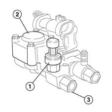
Construction features
It receives a supply of 5V from the LPG control unit.
LPG pressure is measured at the return line from the injectors to provide the control unit with one of the essential parameters for calculating correct LPG injection time.